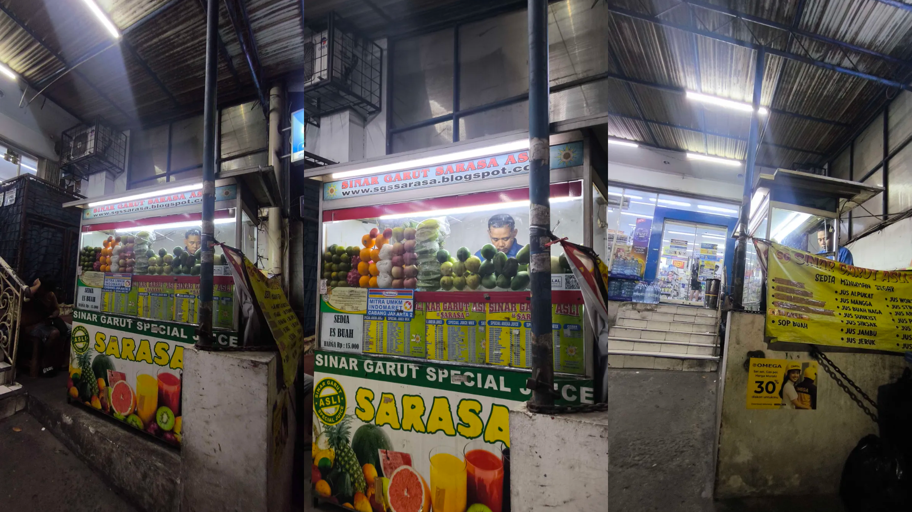

Carilah contoh praktik baik wirausahawan yang sukses mengelola bisnisnya karena berhasil menerapkan “KONSEP EFFECTUATION. Anda diminta untuk memahami effectuation dan menganalisa jenis effectuation mana saja yang diterapkan oleh seorang wirausaha dan sampai sejauh mana tingkat kepentingannya? Berikan penjelasan Anda berdasarkan materi yang telah dibahas di BMP Modul 3 dan ditambahkan dengan sumber referensi lain baik buku, liputan media cetak/digital, jurnal, dan lain-lain. Sampaikan jawaban Anda dalam ulasan 250 hingga 400 kata.
Prinsip Effectuation atau efektuasi adalah cara berpikir dan bertindak yang digunakan oleh seorang wirausaha ketika mengambil keputusan dalam kondisi yang penuh ketidakpastian.
Ada 5 jenis kategori dalam prinsip efektuasi ini.
Bird in Hand.
Bird in hand berarti mengenali pertanyaan2 apa yang ada dalam latar belakang diri kita seperti "siapa diri saya", "apa yang bisa saya lakukan", "siapa saja yang saya kenal", "passion saya apa", "saya lulusan apa", "hobi saya apa" dan segala hal tentang diri kita.
Pertanyaan-pertanyaan tersebut bisa menjadi awal permulaan sebagai seorang wirausahawan. Dalam prinsip ini menjelaskan tentang modal awal yang kita miliki, bisa dimulai dari hal hal kecil yang ada di diri kita.
Affordable Loss.
AFfordable loss, berarti kesiapan kita sebagai wirausaha menyadari soal resiko yang ada dari bisnis kita seperti resiko finansial, resiko tenaga, resiko fungsional dan resiko psikologis. Karena dalam melakukan usahanya, entah ketika baru ingin mulai, ingin mengembangkan bisnisnya, memperluas bisnisnya akan selalu ada resiko.
Sehingga kita harus menentukan berapa persen tingkat kerugian yang bisa kita toleransi ketika mengelola usaha, namun harus dipastikan nilainya tidak dengan seluruh jmodal kita. Prinsip ini bertujuan agar kita siap menghadapi kerugian sebagaimana terdapat keuntungan.
Lemonade.
Lemonade berasal dari ungkapan warga Amerika "When life gives you lemon, make lemonade", artinya adalah ketika hidup kita seperti lemon yang bisa berarti asam atau tidak enak seperti kehidupan. Wirausaha harus bisa memiliki kreativitas untuk mengubah hal yang tidak menyenangkan menjadi hal yang menarik.
Prinsip ini bertujuan agar setiap wirausaha mampu menghadapi situasi yang tidak terduga, dan memanfaatkan situasi itu menjadi sesuatu yang bermanfaat dan menjadi peluang.
Crazy quilt.
Merupakan kemampuan dari sseoarang wirausaha dalam membangun relasi dengan pihak pihak lain dan menggabungkan semuanya menjadi satu usaha yang bermanfaat. Dalam contohnya, crazy quilt berarti mengajak relasi dan menjalin komitmen yang saling menguntungkan dalam bisnis. Sehingga bisa meningkatkan peluang untuk mulai bekerja dan mendapat keuntungan.
Pilot-in-the-plane.
Prinsip ini menganggap hiduo kita seolah olah seperti seorang pilot yang ada di dalam pesawat dan kita yang memegang kemudinya. Dalam contohnya, seorang wirausahawan harus menentukan tujuan bisnis yang ingin dicapai.
Prinsip ini mengharuskan kita sebagai seorang wirausaha untuk menentukan jalan apa yang ingin kita tempuh untuk mewujdukan semua tujuan awal.
Amatilah wirausaha di sekitar lingkungan Anda. Lakukan analisis sampai sejauh mana prinsip effectuation diterapkan dalam mengelola bisnisnya. Identifikasikan pula prinsip effectuation yang paling menonjol pada wirausaha yang Anda amati tersebut.
Susunlah dalam bentuk ulasan yang terdiri atas 1500-2000 kata. Lengkapi pembahasan Anda dengan foto wirausaha beserta lokasi usaha dan jenis produk/layanan yang ditawarkan.
Pak Agus, Jus kelapa gading
satu kampung dengan pemilik, pak jujun
kalo ada bahan ga abis dibuang, yang cepet layu biasanya
gula disimpen di kulkas
Pendahuluan
Jus Sinar Garut Special Kelapa Gading, sebuah usaha minuman Jus yang ada di daerah Kelapa Gading, berlokasi di depan sebuah Indomaret. Keberadaan "Paguyuban Sinar Garut Asli" menjadi salah satu hal yang membuat saya tertarik membeli jus ini, selain karena produknya yang segar dan buahnya yang manis walau tanpa gula. Organisasi ini menjadi contoh nyata dari prinsip efektuasi berbasis komunitas. Sehingga saya tertarik untuk mengamati bagaimana organisasi tersebut berperan dalam pelaku usaha.
2. Rumusan masalah
Apa saja prinsip efektuasi yang digunakan oleh pemilik jus?
3. Tujuan
Untuk menjawab penugasan dari sesi 3 tugas 1 mata kuliah Kewirausahaan di Era Digital dan mengamati proses wirausaha yang dilakukan oleh pemilik jus.
Profil wirausaha
Metodologi Pengamatan
Analisis
Prinsip Bird in Hand
Pemilik merupakan anggota dari organisasi Paguyuban Sinar Garut Asli, yaitu organisasi sosial yang memiliki tujuan membina, serta mengelola es teler sinar garut agar tidak bisa ditiru oleh selain orang garut asli. Dari label ini, para pembeli mendapatkan jaminan kualitas dan standar yang tidak bisa ditiru oleh selain orang Garut. Pemilik maupun penjaga berasal dari daerah yang sama sehingga memiliki hubungan yang dekat sebagai partner bisnis. Ketika si penjual sedang kembali ke kampung halamannya di Garut, maka pemilik langsung yang akan menggantikan untuk menjual jus tersebut.
Sehingga kemudahan untuk mencari orang kepercayaan seperti Pak Agus adalah bukti dari "siapa yang saya kenal", jika dibandingkan dengan resiko yang dimiliki wirausahawan lain yang merekrut orang asing.
Prinsip Affordable Loss
Dalam menjalankan usaha, penjual memiliki resiko bahwa buah-buah tersebut ada kemungkinan tidak bisa digunakan kembali seperti buah Apel karena cepat oksidasi, sehingga untuk meminimalisir resiko, penjual melakukan stok berdasarkan permintaan pelanggan yang paling banyak. Kerugian beberapa buah apel mungkin terlihat kecil, tetapi jika diakumulasikan maka itu bisa menjadi besar. Resiko seperti buah yang kurang bagus juga salah satu kerugian tersendiri yang harus dihadapi oleh pemilik. Pernah saya mendapati buah yang kurang bagus, dan langsung dibuang oleh penjual.
Untuk buah buah yang masih bagus dan awet, bisa digunakan kembali esok hari untuk dibuat jus, beserta dengan gula yang diletakkan di kulkas sehingga lebih tahan lama. Karena pada dasarnya stok berdasarkan prinsip ini sangat penting bagi UMKM, mereka tidak bisa menggunakan modal yang besar. Ini bertolak belakang dengan minimarket yang bisa menanggung resiko stok yang lebih besar.
Kemudian untuk modal awal seperti blender, gerobak merupakan sebuah investasi yang sudah diperhitungkan jangkauan kerugiannya.
Prinsip Lemonade
Penerapan prinsip ini dilakukan dengan cara mencampur beberapa jenis bahan seperti jus wortel dan tomat, jus mangga dan jambu dan lain-lain. Saya pernah mendapati salah satu buah sudah habis, sehingga membeli jus buah yang lain. Namun saya tidak menemukan kelemahan, justru saya merasakan buah yang dibuat sudah manis tanpa perlu tambahan dan buah nya segar.
Ketika satu buah habis dan pembeli membeli jus lain, ini menjadi sebuah peluang kecil. Peluangnya adalah pembeli jadi mencoba varian baru dan mungkin menemukan favorit baru. Penjual juga jadi tahu buah mana yang harus distok lebih banyak.
Penawaran jus campuran juga menjadi salah satu cara untuk mengubah keterbatasan pelanggan yang mungkin hanya ingin membeli satu jenis menjadi peluang untuk menawarkan kombinasi rasa unik dan manfaat tambahan. Hal ini bisa menjadi aset untuk mengubah buah yang ada menjadi produk baru.
Prinsip Crazy Quilt
Saya mengamati bahwa pemilik usaha berjualan di depan toko Indomaret. Sehingga antara penjual jus dan pemilik Indomaret sama-sama mendapatkan keuntungan atau istilahnya simbiosis mutualisme. Penjual jus mendapatkan limpahan pengunjung dari Indomaret yang pasti ramai, keamanan dan penerangan terjamin tanpa perlu bayar biaya sewa yang mahal. Bagi pemilik Indomaret keberadaan penjual jus bisa menjadi nilai tambah agar pembeli bisa sekalian jajan dan menambah kesan di depan toko, bisa juga untuk menambah peluang dari karyawan toko yang berjaga. Seringkali saya mendapati bahwa orang-orang yang baru keluar dari toko Indomaret dan hendak masuk ke Indomaret membeli jus ini. Begitupun termasuk saya, ketika menunggu jus dibuat, saya membeli beberapa keperluan di Indomaret.
Penjual juga menyediakan pembayaran melalui QRIS, pejual tidak membuat sistem pembayarannya sendiri. Hal ini sangat menguntungkan bagi kedua belah pihak, pemilik usaha memiliki kemudahan dalam bertransaksi, dan penyedia QRIS mendapatkan pengguna dan fee transaksi. Tanpa kemitraan dengan QRIS, Pak Jujun dan Pak Agus bisa kehilangan potensi pelanggan tersebut.
Prinsip Pilot-In-The-Plane
Berdasarkan hasil pengamatan saya, penjual menyediakan banyak sekali varian jus, bahkan bisa digabung dan tidak menutup kemungkinan jika ingin beberapa varian. Penjual juga memiliki varian es buah yang semakin membuka peluang agar pembeli bisa memiliki banyak opsi untuk membeli jus.
Penjual tidak bisa mengontrol selera pelanggan yang datang, tapi penjual bisa mengontrol variasi menu yang ditawarkan untuk bisa dibeli oleh banyak orang. Dengan opsi yang banyak, serta opsi mix maupun es buah, penjual bisa menciptakan peluangnya sendiri dan bisa menciptakan masa depan seperti pada prinsip ini.
Prinsip efektuasi yang paling dominan
Berdasarkan hasil analisis di atas, dapat disimpulkan bahwa prinsip yang paling dominan adalah Crazy Quilt dan Bird in Hand.
Hal ini terlihat jelas dari bagaimana lokasi dari jualan ini yang sangat strategius. Ada banyak sekali pengunjung Indomaret yang keluar masuk setiap harinya. Hal ini dibuktikan dari informasi Google Maps Indomaret terkait, dimana pada setiap harinya cenderung ramai pengunjung. Ini menguntungkan kedua belah pihak, yaitu Indomaret dan penjual jus.
Posisi jualan yang ada di pinggir jalan, menjadi sangat strategis ditambah posisinya yang berada persis di depan Indomaret. Saya pribadi, serihgkali ketika menunggu jus nya dibuat, saya masuk ke Indomaret untuk membeli beberapa kebutuhan. Begitupula dengan pelanggan-pelanggan lain, berdasarkan pengamatan saya, banyak pembeli jus yang pada awalnya pergi ke Indomaret lalu kemudian membeli jus karena posisinya yang persis di dekat pintu masuk.
Kemudian ada juga ketersediaan QRIS, memberikan pelanggan kemudahan dalam bertransaksi dan penjual juga mendapatkan pasarnya tersendiri. Sebagaimana penelitian yang dilakukan oleh Alifia, N et al. (2024), QRIS meningkatkan volume dan nominal transaksi yang diproses oleh masing-masing merchant termasuk UMKM. Peningkatan pendapatan yang juga disebabkan oleh kemudahan penggunaan QRIS oleh semua kalangan, terutama kalangan muda yang lebih suka transaksi non-tunai. Sehingga hal ini bisa memperluas peluang bagi penjual untuk mendapatkan pelanggan, seperti mahasiswa, pekerja yang lebih sering bertransaksi non-tunai.
Kombinasi dari usaha ini adalah modal sosial dari Paguyuban (Bird in Hand) yang memberikan pondasi utama dalam kepercayaan pembeli dan sumber daya yang kemudian dieksekusi dengan kemitraan strategis (Crazy Quilt) dengan Indomaret dan penyedia QRIS. Sehingga satu prinsip menyiapkan "strategi" dan yang lain menentukan "medan perangnya".
Kesimpulan dan Refleksi
Berikut untuk jawaban saya.
Terima kasih.

Sumber referensi: